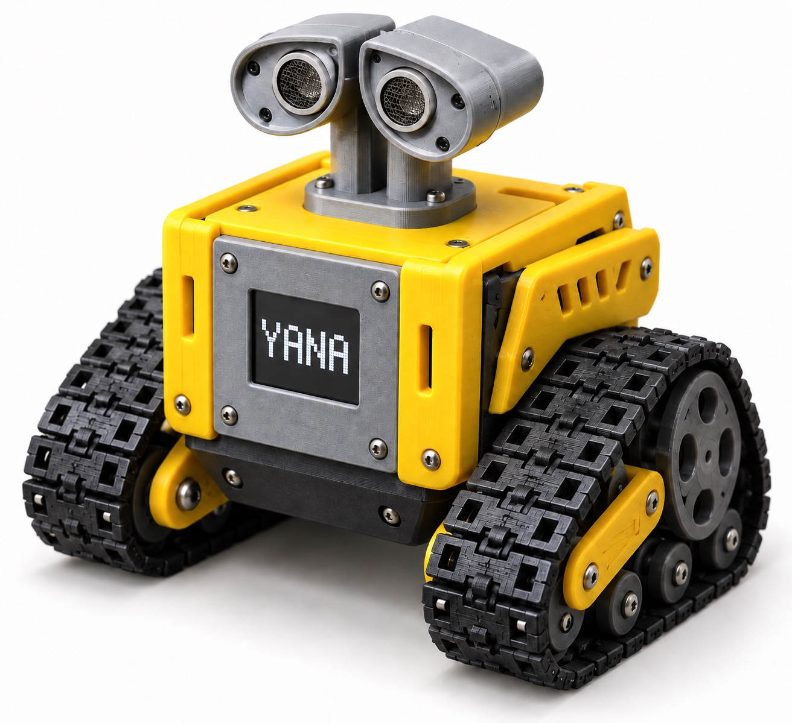
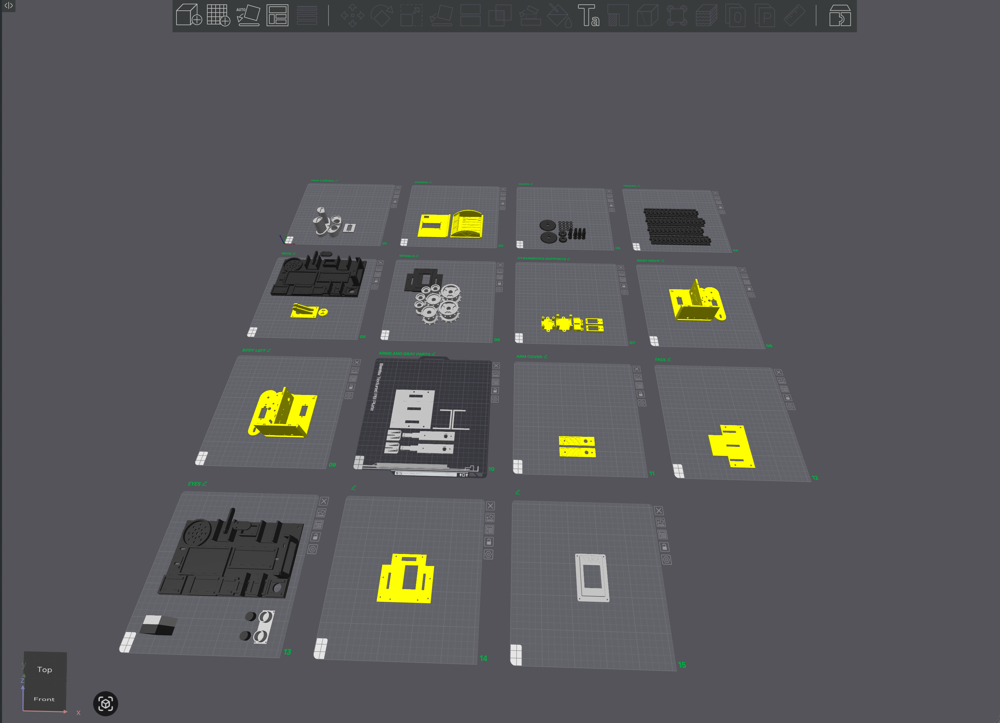

AI steps out of the screen.
Physical AI Robot Yana Wheelbot.
Open-source ESP32-S3 robot branch of the Yana ecosystem: Connecting AI models via WebSocket + MCP protocol, equipped with ToF cliff-sensors and 3D-printable Bambu Studio kit.

Concept Yana Wheelbot 2026
Mẫu thiết kế 2 bánh vi sai linh hoạt, màn hình hiển thị cảm xúc ST7735 và cụm cảm biến ToF phía trước.
Tải Firmware (.bin) ↓
Bộ chi tiết in 3D (Bambu Studio)
15 bàn in chi tiết vỏ và khung đỡ động cơ servo được dàn trang sẵn sàng để in trực tiếp trên máy in 3D.
Tải Kit in 3D (.3mf) ↓Vi xử lý 2 nhân 240MHz, 16MB Flash, 8MB PSRAM cho xử lý giao thức AI tại chỗ.
Đo khoảng cách laser chính xác theo thời gian thực, tự động kích hoạt phanh an toàn khi đến mép bàn.
Giao tiếp trực tiếp với Yana Studio qua mạng LAN nội bộ an toàn (Cổng 8080 JSON-RPC 2.0).
Kế thừa và mở rộng từ thiết kế KST AI Robot, bổ sung ranh giới an toàn và lớp điều khiển thông minh.